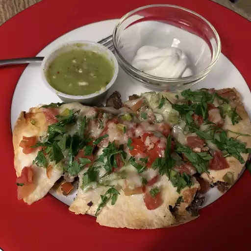

Mexican Pizza
This Mexican pizza recipe layers delicious seasoned ground beef and refried beans between two crisp tortillas. Top with salsa, cheese, tomatoes, and jalapeño for incredible flavor in every bite!
Submitted by Jimmy Simian | Updated on March 3, 2024

Craving Taco Bell? Skip the drive-thru and make this copycat Mexican pizza recipe at home.
How to Make Mexican Pizza
Here's a brief overview of what you can expect when you make this homemade Mexican pizza recipe:
- Cook the beef with onions and garlic, drain, and season.
- Place a tortilla on each pie plate and top with refried beans.
- Cover with the beef, top with another tortilla, and bake until the tortillas are crisp.
- Layer the toppings in this order: Salsa, cheeses, tomatoes, green onions, and jalapeño.
- Bake until the cheese is melted. Cool, then cut each pizza into four slices.
Ingredients
- ½ pound ground beef
- 1 medium onion, diced
- 1 clove garlic, minced
- 1 tablespoon chili powder
- 1 teaspoon ground cumin
- ½ teaspoon paprika
- ½ teaspoon salt
- ½ teaspoon black pepper
- 1 (16 ounce) can refried beans
- 4 (10 inch) flour tortillas
- ½ cup salsa
- 1 cup shredded Cheddar cheese
- 1 cup shredded Monterey Jack cheese
- 2 green onions, chopped
- 2 tomatoes, diced
- ¼ cup thinly sliced jalapeño pepper
- ¼ cup sour cream (Optional)
Home